Configuring the Jetson Expansion Headers#
Each Jetson developer kit includes several expansion headers and connectors (collectively, “headers”):
40‑pin expansion header: Lets you connect a Jetson developer kit to off-the-shelf Raspberry Pi HATs (Hardware Attached on Top) such as Seeed Grove modules, SparkFun Qwiic products, and others. Many of the pins can be used either as GPIO or as “special function I/O” (SFIO) such as I2C, I2S, etc.
CSI connector: Pins on this connector can be used either as GPIO or as “special function I/O” (SFIO) such as DMIC, DSPK, I2S, etc.
M.2 Key E slot: Pins on this connector can be used either as GPIO or as “special function I/O” (SFIO) such as I2S, etc.
This table shows which expansion headers are available on each Jetson platform:
Jetson Platform |
40-pin header |
M.2 Key E slot |
CSI connector * |
|
|---|---|---|---|---|
NVIDIA® Jetson Orin™ NX and Jetson Orin™ Nano series |
✓ |
✓ |
✓ |
|
NVIDIA® Jetson AGX Orin™ |
✓ |
✓ |
✓ |
|
* The CSI connector pin count might vary on each NVIDIA® Jetson™ platform. |
||||
The configuration of all of the I/O pins on Jetson developer kits is statically defined, and is programmed into the device when it is flashed. To change the pin configuration directly, you must update a pinmux spreadsheet for your platform, then flash the new configuration to the Jetson device.
This is a suitable means of configuring production systems, but for development systems it is very inconvenient. Therefore NVIDIA provides the Jetson Expansion Header Tool (also known as Jetson‑IO), a Python script that runs on a Jetson developer kit and lets you change pin configurations through a graphic user interface. Jetson‑IO modifies the Device Tree Blob (DTB) firmware so that a new configuration for the expansion headers is applied when the developer kit is rebooted.
Running Jetson-IO#
To launch Jetson‑IO, enter this command on the developer kit:
$ sudo /opt/nvidia/jetson-io/jetson-io.py
Main Screen: Selecting a Header#
When you launch Jetson‑IO it displays its main screen, which lists the expansion headers supported on your Jetson device. For example, on Jetson Orin NX, the main screen looks like this:
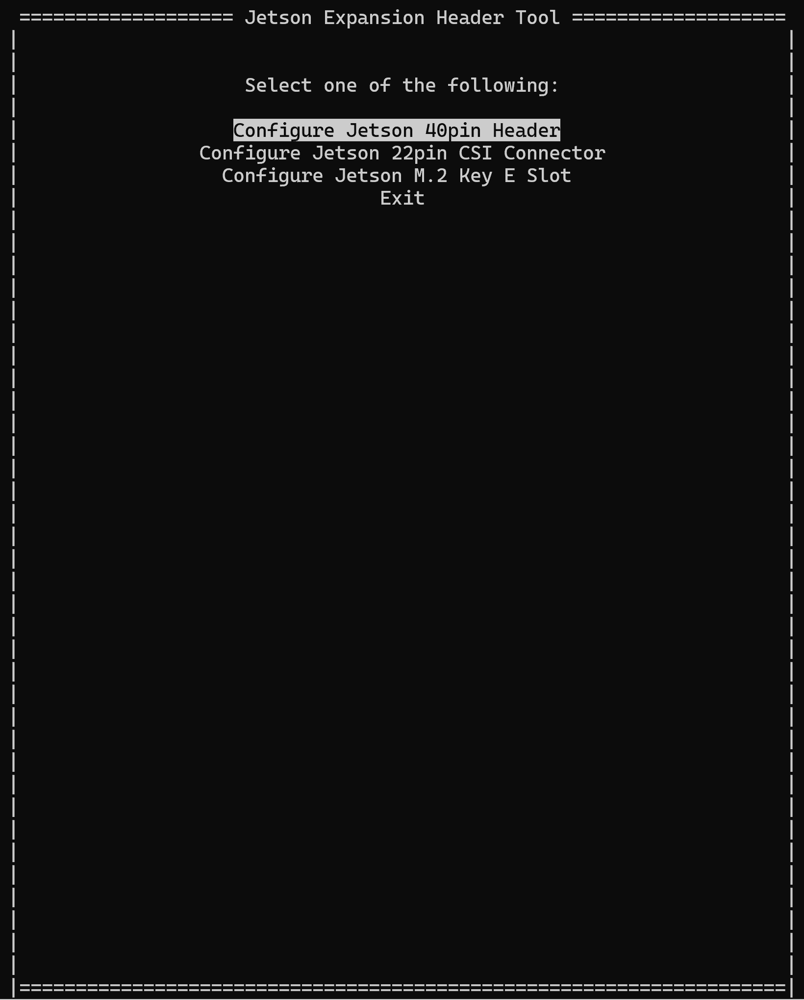
Select one of the options to display the header screen, which you can use to configure the selected header.
Header Screen#
The header screen displays the current configuration of the selected header. On Jetson Orin Nano, for example, the header screen for the 40-pin expansion header looks like this:
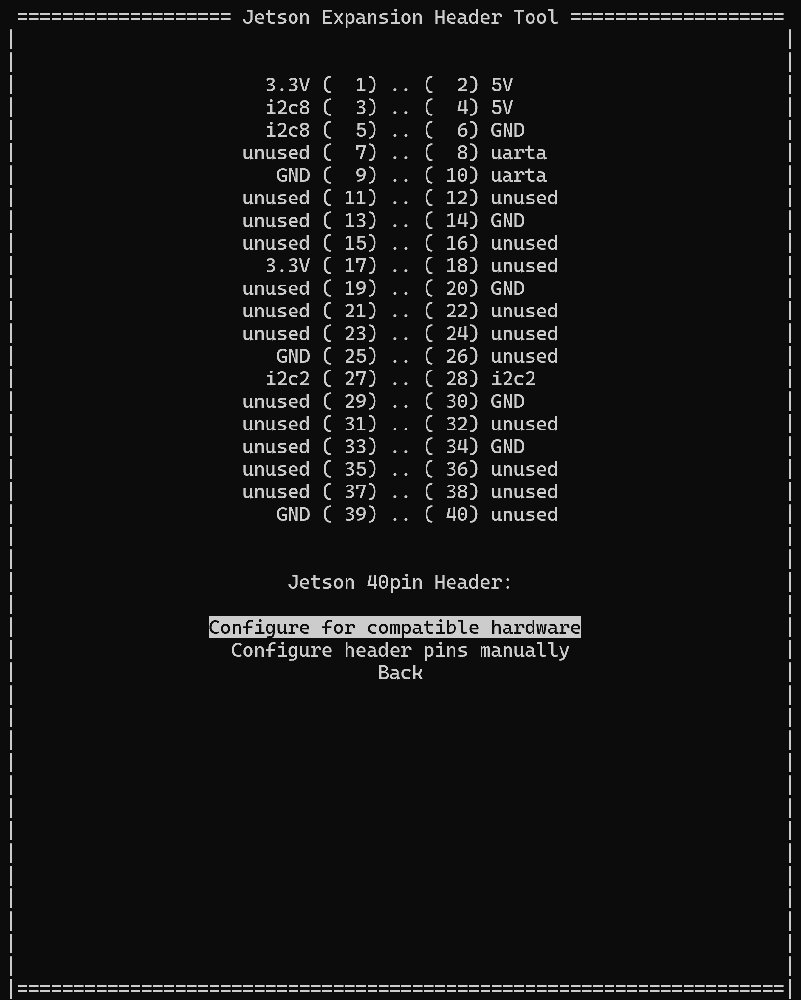
The header screen offers you two options for configuring I/O pins:
Configure for compatible hardware: Displays the compatible hardware screen, which lets you select from a list of configurations for hardware modules that can be attached to the header.
Configure header pins manually: Displays the expansion header configuration screen, which lets you specify which functions to enable on the header.
Back: Returns you to the main screen.
Compatible Hardware Screen#
The compatible hardware screen displays a list of configurations for interfacing the selected header with certain hardware modules. On Jetson Orin Nano, for example, the compatible hardware screen for the 40‑pin expansion header looks like this:
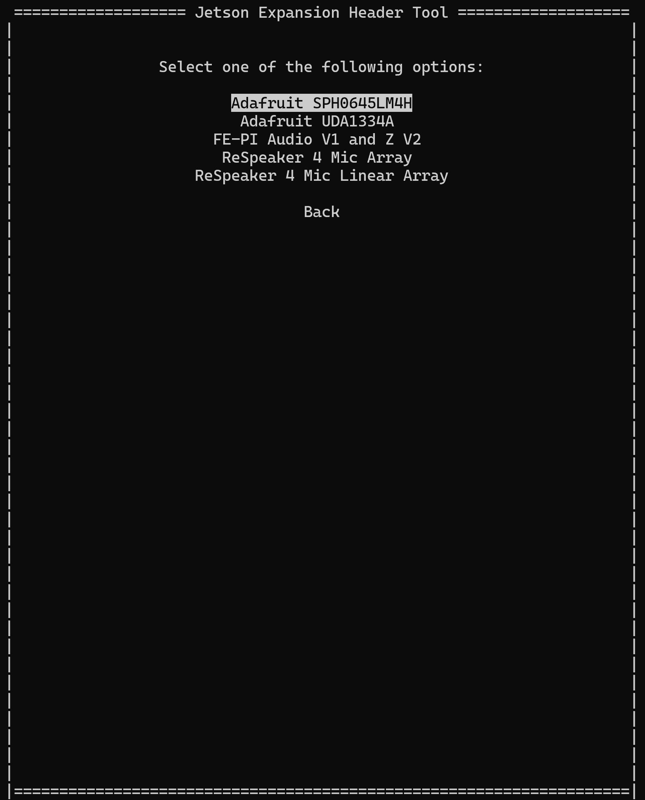
When you select a configuration, Jetson‑IO returns to the header screen, where it updates the header configuration to reflect the hardware module you selected:
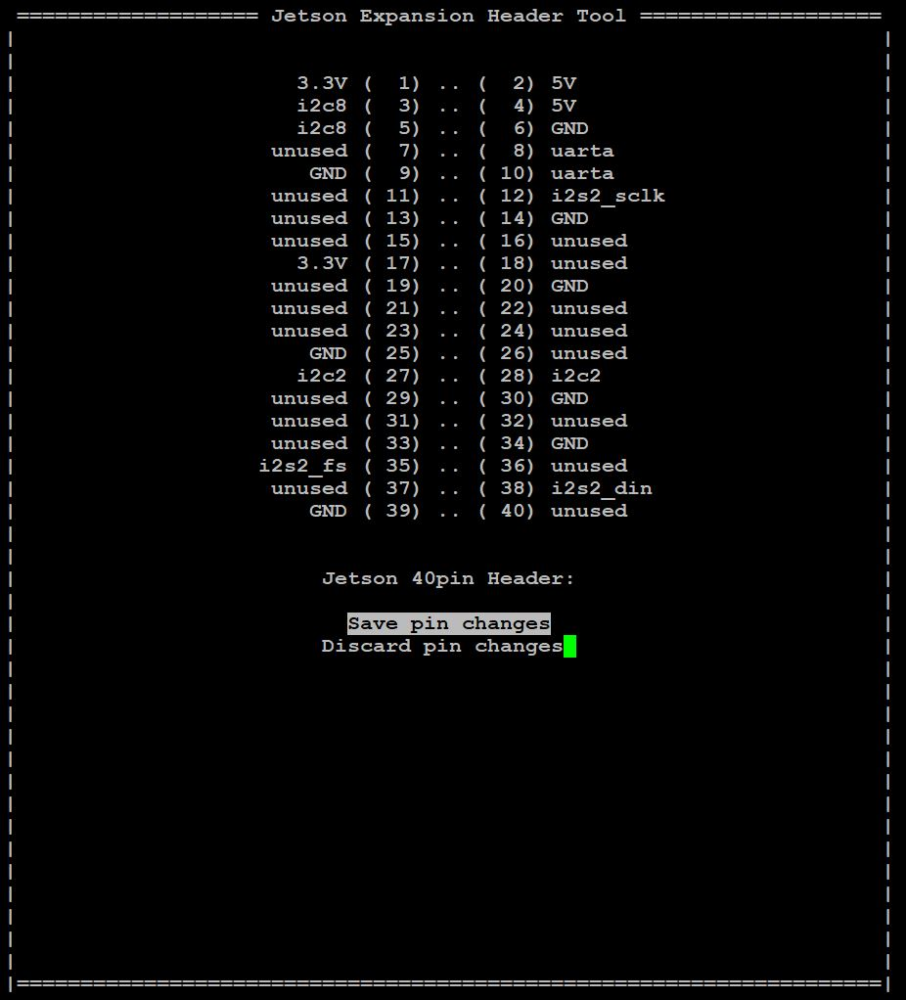
The header screen also displays a different set of options:
Save pin changes: Saves the header’s new configuration and returns to the main screen; see Main Screen: Save, below.
Discard pin changes: Discards the header’s new configuration changes and redisplays the prior configuration with the original set of options (see Header Screen, above). You can select a configuration option again, or select Back to return to the main screen.
Configuring 40-Pin Expansion Header#
The 40 pin expansion header configuration screen displays a list of special functions that the selected header supports. It shows the pins associated with the functions in parentheses. Additionally, you can also configure the pins as GPIO or unused. On Jetson Orin Nano, for example, the expansion header configuration screen for the 40‑pin header looks like this:
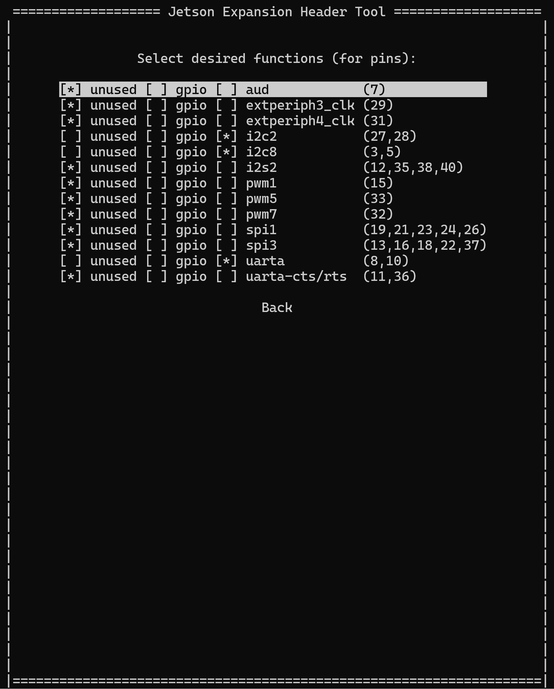
Use the up-arrow and down-arrow keys to highlight the function you want to enable, then press Enter or the space bar to toggle a pin function.
For more details on the supported functions, see the Technical Reference Manual (TRM) for the Jetson SoC in your developer kit.
To accept the selected set of functions, select Back. Jetson‑IO redisplays the header screen, updated to reflect the new state of the selected functions. The header screen also shows the Save pin changes and Discard pin changes options, as described in Compatible Hardware Screen, plus one additional option:
Export as Device-Tree Overlay: Exports the selected header’s configuration as a new device tree overlay (DTBO). It stores the file in the
/boot/directory.
Using the Pins in GPIO Mode#
You can demonstrate the pin in GPIO mode using gpiod or Jetson.GPIO utility after enabling the pin in GPIO mode as described above.
Installing gpiod#
Run the below command to install gpiod:
$ sudo apt install gpiod
Displaying Pin Information#
You can retrieve detailed information about all GPIO pins using the below command:
$ gpioinfo
Example output:
$ gpioinfo
gpiochip0 - 164 lines:
line 0: "PA.00" "regulator-vdd-3v3-sd" output active-high [used]
line 1: "PA.01" unused input active-high
line 2: "PA.02" unused input active-high
...
Get GPIO Number by Name#
You can get the gpio number with the pin name that can be used by gpioset/gpioget:
$ gpiofind
Example Output:
$ gpiofind PDD.02
gpiochip1 22
GPIO Output#
To drive a pin as an output with a high (1) or low (0) value, run the below command:
$ gpioset `gpiofind "<Pin Name>"`=<Output value>
For instance, to set pin 3 on the 40-pin header to an output value of 1:
$ gpioset `gpiofind "PDD.02"`=1
GPIO Input#
To read the input value of a pin, run the below command:
$ gpioget `gpiofind "<Pin Name>"`
For example, to fetch the input value of pin 3 on the 40-pin header, which returns 1:
$ gpioget `gpiofind "PDD.02"`
1
For details on Jetson.GPIO, refer to NVIDIA/jetson-gpio.
Configuring the CSI Connector#
Applies to: Jetson platforms with a CSI connector.
The Configure Jetson 22pin CSI Connector option allows you to configure the CSI Connector on Jetson Orin Nano. The Connector name might vary across Jetson platforms.
From the main menu, select “Configure Jetson 22pin CSI Connector.”
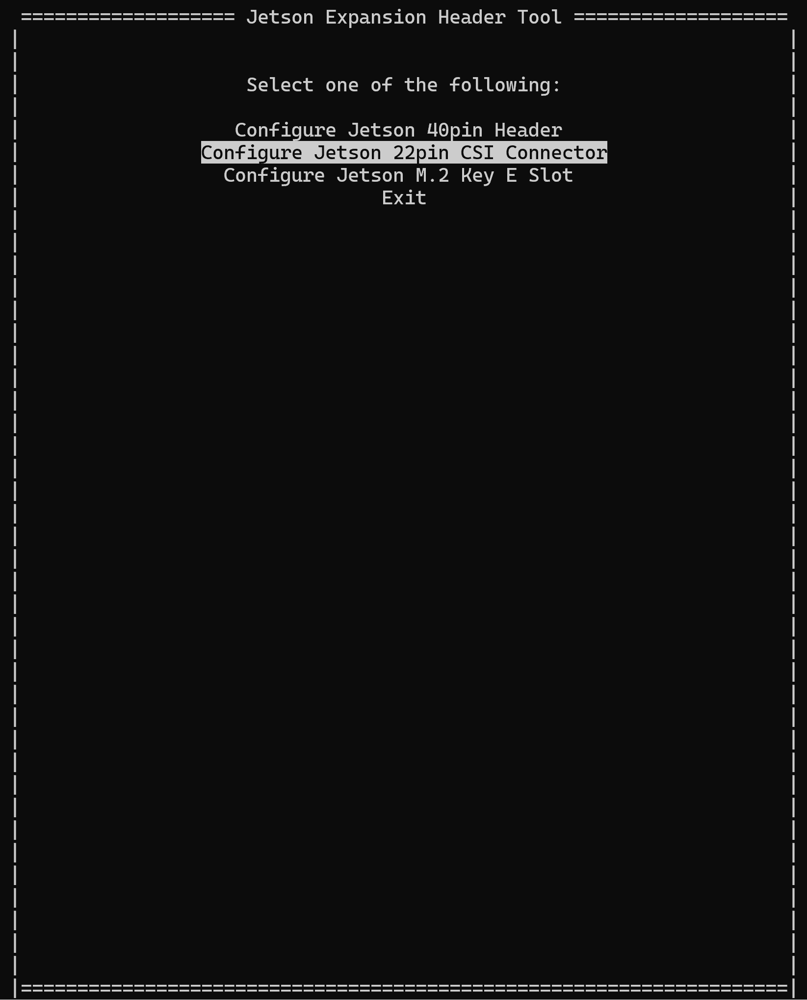
Jetson‑IO displays the CSI Connector Screen.
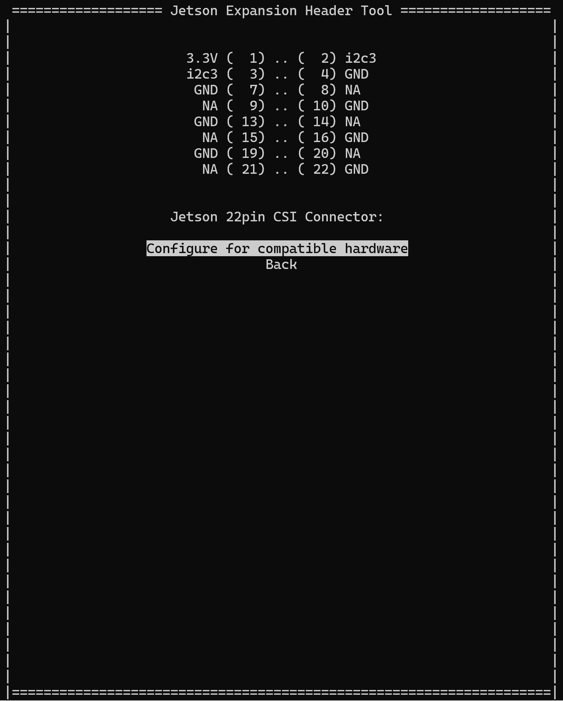
Select from a list of compatible hardware. You can add custom configurations as shown in Kernel Configuration in the topic Sensor Software Driver Programming.
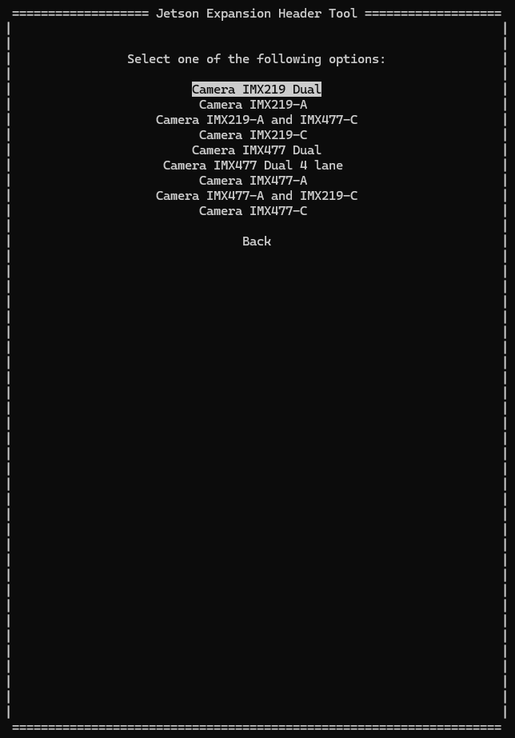
Select “Save pin changes” to save the selection you have made:
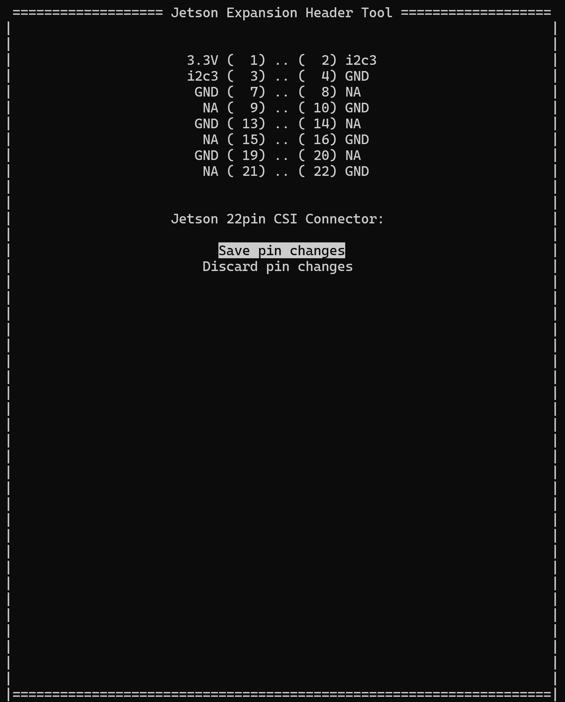
Select “Save and reboot to reconfigure pins” to complete the reconfiguration:
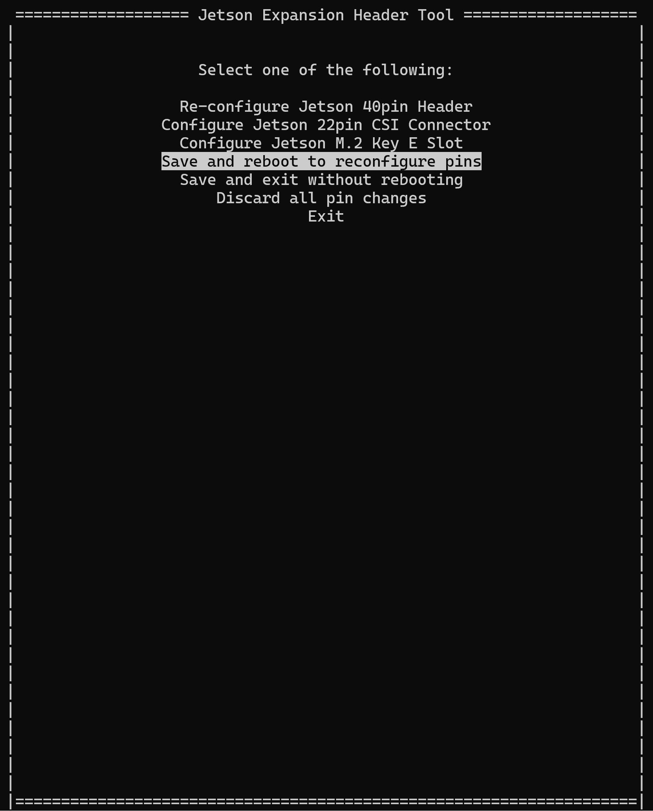
Jetson-IO displays the name of the DTB file it modified and prompts you to reboot the device:
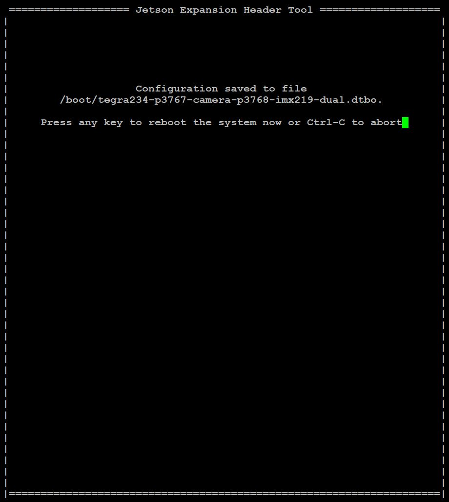
Main Screen: Save#
When you have finished making changes to a header configuration and select the header screen’s Save pin changes option, Jetson-IO redisplays the main screen.
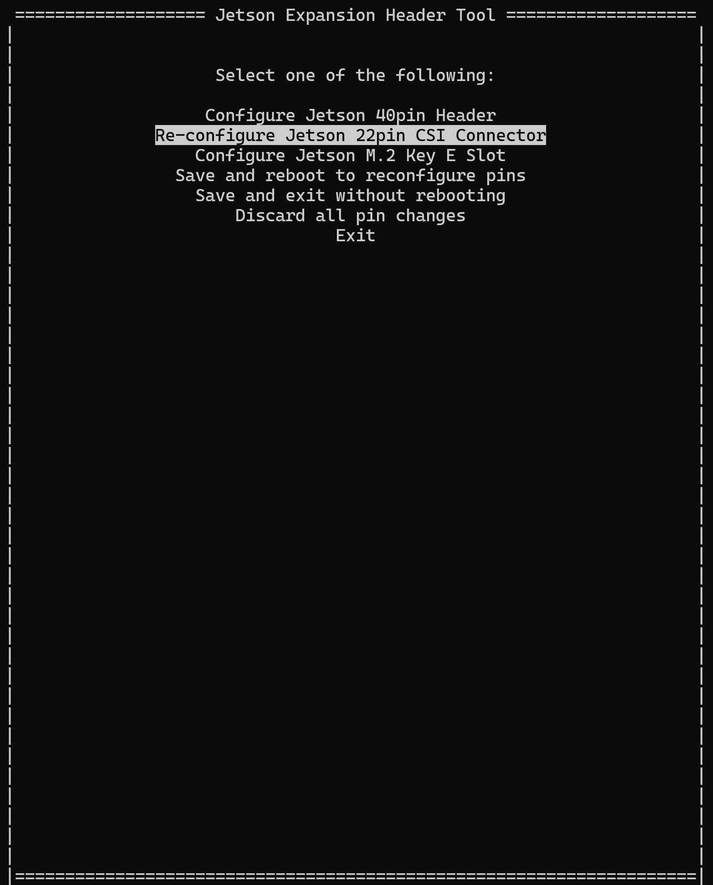
The main screen allows you to configure or reconfigure another header, and also displays some additional options:
Save and reboot to reconfigure pins: Creates a new DTB by applying device tree overlays for the header configurations, updates the configuration file for booting Linux (
/boot/extlinux/extlinux.conf), and reboots the developer kit.Save and exit without rebooting: Creates a new DTB and updates
extlinux.confas “Save and reboot” does, but does not reboot the developer kit. You can apply the new configuration by rebooting at a time of your choice.Discard all pin changes: Discards changes you have made to all headers; redisplays the main screen with the original set of options.
Note
Jetson‑IO preserves all of the configurations you have saved in the configuration file, not just the latest one. When you have saved one or more configurations in addition to the default, the developer kit displays a menu of configurations each time you boot it, allowing you to select the current one or any older one.
Command Line Interface#
If you prefer to configure the headers from the command line instead of menus, NVIDIA provides a set of command line utilities that offer the same functionality. The following sections describe these utilities.
config-by-pin: View Header Configuration by Pin#
Displays the current configuration of supported headers:
$ config-by-pin.py [<options>]
The command line options specify the part(s) of the configuration to display. If no options are specified, the entire configuration is displayed.
The following table describes the command line options.
Command line option |
Meaning |
|---|---|
-h –help |
Displays a usage message and exits. |
-l –list |
Lists the headers supported on the target platform and each header’s header number. (The command line utilities use header numbers to refer to specific headers.) |
-n <h> –header <h> |
Specifies the header number of a header. If
not specified, the header number defaults to
1, which currently represents the 40‑pin
expansion header. This option is used
together with |
-p <p> –pin <p> |
Displays the current configuration of pin |
Examples:
$ sudo /opt/nvidia/jetson-io/config-by-pin.py
$ sudo /opt/nvidia/jetson-io/config-by-pin.py -l
$ sudo /opt/nvidia/jetson-io/config-by-pin.py -p 5
$ sudo /opt/nvidia/jetson-io/config-by-pin.py -p 10 -n 2
config-by-function: Configure Header(s) by Special Function#
Displays and configures the I/O functions available on all supported headers:
$ config-by-function.py -h
$ config-by-function.py ‑l {all,enabled}
$ config-by-function.py ‑o {dt,dtbo} <hfs> <hfs> ...
The following table describes the command line options.
Command line option |
Meaning |
|---|---|
-h –help |
Displays a usage message and exits. |
-l {all,enabled} –list {all,enabled} |
Lists functions supported by the headers.
|
-o {dt,dtbo} –out {dt,dtbo} |
Creates a new DTB or one or more device tree overlays incorporating the configuration changes made to the headers. dt: Creates a new DTB file. The Linux
boot configuration file
( dtbo: Creates a device tree overlay file for each reconfigured header. |
<hfs> <hfs> … |
Used with <hn>="<f1> <f2> ..."
<hn>=<f1>
Where:
You can also specify "<f1> <f2> ..."
<f1>
|
Examples:
$ sudo /opt/nvidia/jetson-io/config-by-function.py -l all
$ sudo /opt/nvidia/jetson-io/config-by-function.py -l enabled
$ sudo /opt/nvidia/jetson-io/config-by-function.py -o dt i2s2 spi1
$ sudo /opt/nvidia/jetson-io/config-by-function.py -o dtbo i2s2 spi1
$ sudo /opt/nvidia/jetson-io/config-by-function.py -o dt 1="i2s2 spi1" 3=i2s4
$ sudo /opt/nvidia/jetson-io/config-by-function.py -o dtbo 1="i2s2 spi1" 3=i2s4
config-by-hardware: Configure Header(s) by Hardware Module#
Displays a list of the supported hardware module configurations and configures the Jetson device for a given hardware module:
$ config-by-hardware.py -h
$ config-by-hardware.py -l
$ config-by-hardware.py -n <hds> <hds> ...
The following table describes the command line options.
Command line option |
Meaning |
|---|---|
-h –help |
Displays a usage message and exits. |
-l –list |
Displays a list of available hardware module configurations. |
‑n <hds> <hds> … ‑name <hds> <hds> … |
Configures one or more headers to interface
with specified hardware modules. Each
<hn>=<module>
Where:
You can also specify This option generates a new DTB file for the
specified hardware modules and updates the
Linux boot configuration file,
|
Examples:
$ sudo /opt/nvidia/jetson-io/config-by-hardware.py -l
$ sudo /opt/nvidia/jetson-io/config-by-hardware.py -n "Adafruit SPH0645LM4H"
$ sudo /opt/nvidia/jetson-io/config-by-hardware.py -n 1="Adafruit SPH0645LM4H"
Note
- There are a few important limitations to consider:
The configuration scripts
config-by-hardware.pyandconfig-by-function.pycannot be used simultaneously to configure the Hardware Module and Pins Special Function. Instead, usejetson-io.pyto select and configure both settings within a single session.If a user requests a new configuration from the Jetson-IO tool after a reboot, the Hardware Module configurations from the previous session will not be retained. It will be necessary to re-select these configurations.
Adding Support for Custom Hardware#
You can use Jetson‑IO to support a custom hardware module by creating a device tree overlay for the hardware module. The following sections describe this process.
Device Tree Overlays#
To add support for your custom hardware to Jetson‑IO you must understand
how Jetson‑IO manages hardware add-ons. Support for hardware modules is
handled by device tree overlay files (.dtbo files).
A device tree overlay for a hardware module must define:
The
overlay-nameproperty, which specifies a name for the hardware module; a unique name that distinguishes this overlay from othersThe
jetson-header-nameproperty, which specifies the expansion header with which the hardware module is associated; must specify one of the values described in the following table, depending on which header the hardware module is associated withjetson-header-namevaluesHeader
Value
40-pin expansion header
Jetson 40pin Header
M.2 Key E slot
Jetson M.2 Key E Slot
CSI connector (Jetson Orin)
Jetson AGX CSI Connector
- CSI connector (Jetson Orin NX /
Jetson Orin Nano)
Jetson 22pin CSI Connector / Jetson Nano CSI Connector
The
compatibleproperty, which indicates which combination of Jetson module and carrier board the overlay supports; must specify one or more of the values described in the following table, depending on what Jetson platforms are supported
Jetson Platform |
|
|---|---|
Jetson AGX Orin |
nvidia,p3737-0000+p3701-0000nvidia,p3737-0000+p3701-0004nvidia,p3737-0000+p3701-0005 |
Jetson Orin NX and Nano series |
nvidia,p3768-0000+p3767-0000nvidia,p3768-0000+p3767-0001nvidia,p3768-0000+p3767-0003nvidia,p3768-0000+p3767-0004nvidia,p3768-0000+p3767-0005nvidia,p3509-0000+p3767-0000nvidia,p3509-0000+p3767-0001nvidia,p3509-0000+p3767-0003nvidia,p3509-0000+p3767-0004nvidia,p3509-0000+p3767-0005 |
The special-function I/O pins, if any, defined for the headers
The nodes and/or properties for any devices on the module, for example, external integrated circuits such as audio codecs
Users can obtain the correct compatible string for their Jetson platform by entering the following command. If you have a Jetson Orin NX developer kit, this command also identifies the PCB revision:
$ cat /sys/firmware/devicetree/base/compatible
As an example, consider the “FE-PI Audio V1 and Z V2” module. In the
target’s /boot/ directory are overlay files with names matching the
pattern:
*-fe-pi-audio.dtbo
You can use the fdtdump utility to inspect the contents of the overlay
files and view the overlay-name, jetson-header-name, and compatible
properties. For example, on Jetson Orin NX you can display
these properties by entering the command:
$ fdtdump /boot/tegra234-p3767-0000-p3509-a02-fe-pi-audio.dtbo
Creating a Simple Device Tree Overlay#
To create a simple device tree overlay to add a new custom property for
Jetson Orin NX Developer Kit and attach it to the 40‑pin expansion
header, create a file named my-overlay.dts on the target platform
with the following contents:
/dts-v1/;
/plugin/;
/ {
overlay-name = "My Jetson Overlay";
jetson-header-name = "Jetson 40pin Header";
compatible = "nvidia,p3768-0000+p3767-0000";
fragment@0 {
target-path = "/";
__overlay__ {
my-custom-property = "This Is My Overlay";
};
};
};
Enter the following command to compile the DTS source file into an overlay file:
$ dtc -O dtb -o my-overlay.dtbo -@ my-overlay.dts
After you copy the new overlay file to the /boot/ directory, Jetson‑IO
finds the overlay file and allows you to apply it:
$ sudo cp my-overlay.dtbo /boot
$ sudo /opt/nvidia/jetson-io/config-by-hardware.py -l
Header 1 [default]: Jetson 40pin Header
Available hardware modules:
1. Adafruit SPH0645LM4H
2. Adafruit UDA1334A
3. FE-PI Audio V1 and Z V2
4. My Jetson Overlay
5. ReSpeaker 4 Mic Array
6. ReSpeaker 4 Mic Linear Array
Header 2: Jetson 22pin CSI Connector
Available hardware modules:
1. Camera IMX219 Dual
2. Camera IMX477 Dual
3. Camera IMX477 Dual 4 lane
4. Camera IMX477-A and IMX219-C
Header 3: Jetson M.2 Key E Slot
No hardware configurations found!
$ sudo /opt/nvidia/jetson-io/config-by-hardware.py -n "My Jetson Overlay"
Creating a Custom Device Tree Overlay#
If you want to create an overlay for a custom hardware module that
attaches to one of the supported headers, the simplest way to do so is
to use Jetson‑IO to configure the header as needed and export the
configuration as an overlay. You can do this with either the
menu-oriented Jetson‑IO script or the associated config-by-... command
line tools.
For example, to create an overlay for Jetson Orin NX that enables the I2S interface on the 40‑pin expansion header, enter this command:
$ sudo /opt/nvidia/jetson-io/config-by-function.py -o dtbo i2s2
Configuration saved to /boot/jetson-io-hdr40-user-custom.dtbo.
You can then convert the overlay into a device tree source file by entering this command:
$ dtc -I dtb -O dts -o my-overlay.dts /boot/jetson-io-hdr40-user-custom.dtbo.
You can modify the generated device tree source as necessary for your
custom hardware, adding any additional nodes and/or properties that the
hardware module requires. Then you can re-compile the device tree source
and place it in the /boot/ directory for Jetson‑IO to use:
$ dtc -O dtb -o my-overlay.dtbo -@ my-overlay.dts
$ sudo cp my-overlay.dtbo /boot/jetson-io-hdr40-user-custom.dtbo